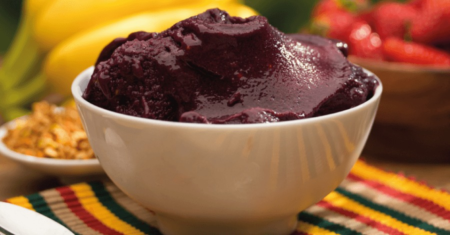
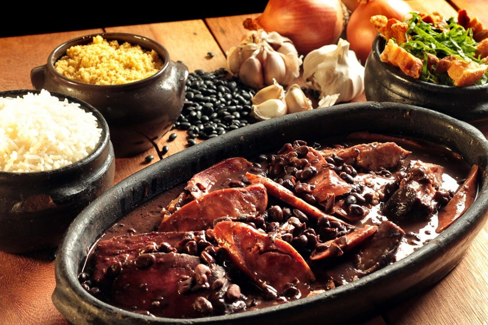
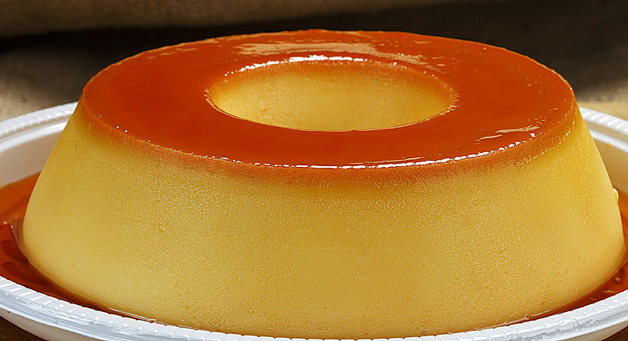

PRATOS POPULARES
  AÇAÍ
O Açaí é uma fruta que já espalhou por todo o Brasil,
embora seja tradicionalmente do norte do país. Não é
difícil encontrar barraquinhas de açaí em praias ou até
mesmo ver a iguaria dividindo espaço com outras
sobremesas geladas em casas de sorvete, por exemplo.
FEIJOADA
A feijoada consiste em uma mistura do feijão
preto cozido, com partes menos nobres do porco,
como orelha, rabo, além de linguiça e carne seca.
Normalmente vem acompanhada de couve e de arroz.
PUDIM
O pudim de leite condensado é uma das sobremesas mais amadas pelos brasileiros. Ele consiste em uma mistura uma mistura de leite condensado, ovos e açúcar basicamente, concedendo a ele uma textura bastante cremosa, embora firme.